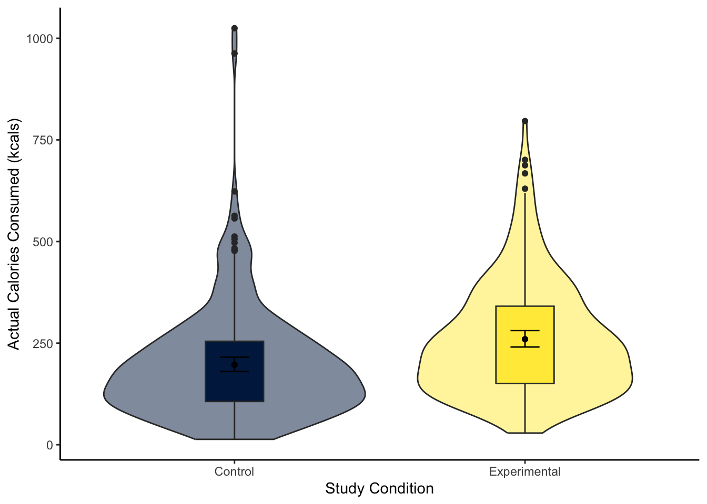
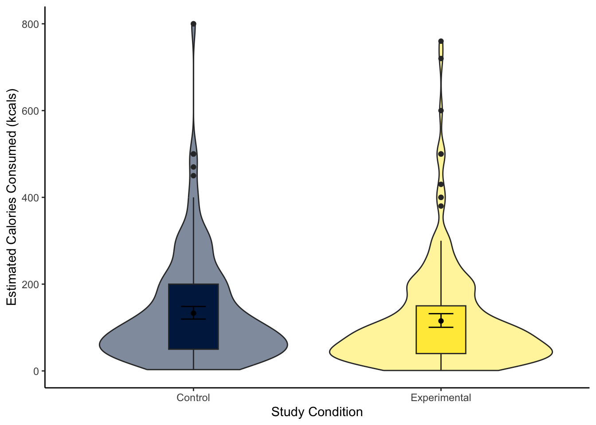

Rows: 464
Columns: 10
$ ParticipantID <dbl> 1002, 1004, 1007, 1016, 1018, 1021, 1022, 1024, 102…
$ Sex <dbl> 1, 1, 0, 1, 1, 1, 1, 1, 1, 1, 1, 1, 0, 0, 1, 1, 1, …
$ Age <dbl> 18, 19, 19, 21, 20, 20, 21, 21, 19, 20, 21, 20, 21,…
$ Ethnicity <dbl> 7, 3, 3, 4, 1, 3, 1, 6, 4, 7, 1, 3, 3, 4, 7, 2, 3, …
$ OzEstimate <dbl> 3.0, 2.0, 1.0, 3.0, 5.0, 1.0, 1.0, 3.0, 4.0, 1.0, 4…
$ CalEstimate <dbl> 65, 10, 20, 25, 50, 5, 20, 180, 470, 50, 130, 100, …
$ M_postsoup <dbl> 3.3, 3.1, 43.4, 5.5, 6.0, 0.8, 3.8, 4.5, 7.9, 8.1, …
$ F_CaloriesConsumed <dbl> 73.19441, 68.75839, 962.61743, 121.99069, 133.08075…
$ Condition <fct> 0, 0, 0, 0, 0, 0, 0, 0, 0, 0, 0, 0, 0, 0, 0, 0, 0, …
$ Condition_label <chr> "Control", "Control", "Control", "Control", "Contro…9 Regression with one categorical predictor
Introduction.
Chapter Intended Learning Outcomes (ILOs)
By the end of this chapter, you will be able to:
Visualise the difference between two groups on an outcome.
ILO2.
9.1 Chapter preparation
9.1.1 Introduction to the data set
For most of this chapter, we are using open data from Lopez et al. (2023). The abstract of their article is:
Imagine a bowl of soup that never emptied, no matter how many spoonfuls you ate—when and how would you know to stop eating? Satiation can play a role in regulating eating behavior, but research suggests visual cues may be just as important. In a seminal study by Wansink et al. (2005), researchers used self-refilling bowls to assess how visual cues of portion size would influence intake. The study found that participants who unknowingly ate from self-refilling bowls ate more soup than did participants eating from normal (not self-refilling) bowls. Despite consuming 73% more soup, however, participants in the self-refilling condition did not believe they had consumed more soup, nor did they perceive themselves as more satiated than did participants eating from normal bowls. Given recent concerns regarding the validity of research from the Wansink lab, we conducted a preregistered direct replication study of Wansink et al. (2005) with a more highly powered sample (N = 464 vs. 54 in the original study). We found that most results replicated, albeit with half the effect size (d = 0.45 instead of 0.84), with participants in the self-refilling bowl condition eating significantly more soup than those in the control condition. Like the original study, participants in the selfrefilling condition did not believe they had consumed any more soup than participants in the control condition. These results suggest that eating can be strongly controlled by visual cues, which can even override satiation.
In summary, they replicated an (in)famous experiment that won the Ig-Nobel prize. Participants engaged in a intricate setting (seriously, go and look at the diagrams in the article) where they ate soup from bowls on a table. In the control group, participants could eat as much soup as they wanted and could ask for a top-up from the researchers. In the experimental group, the soup bowls automatically topped up through a series of hidden tubes under the table. The idea behind the control group is they get an accurate visual cue by the soup bowl reducing, and the experimental group get an inaccurate visual cue by the soup bowl seemingly never reducing.
In the original article, participants in the experimental group ate more soup than participants in the control group, but the main author was involved in a series of research misconduct cases. Lopez et al. (2023) wanted to see if the result would replicate in an independent study, so they predicted they would find the same results. In this chapter, we will explore the difference between the control and experimental groups on several variables in their data set.
9.1.2 Organising your files and project for the chapter
Before we can get started, you need to organise your files and project for the chapter, so your working directory is in order.
In your folder for research methods and the book
ResearchMethods1_2/Quant_Fundamentals, create a new folder calledChapter_09_regression_categorical. WithinChapter_09_regression_categorical, create two new folders calleddataandfigures.Create an R Project for
Chapter_09_regression_categoricalas an existing directory for your chapter folder. This should now be your working directory.Create a new R Markdown document and give it a sensible title describing the chapter, such as
09 t-tests and Regression. Delete everything below line 10 so you have a blank file to work with and save the file in yourChapter_09_regression_categoricalfolder.We are working with a new data set, so please save the following data file: Lopez_2023.csv. Right click the link and select “save link as”, or clicking the link will save the files to your Downloads. Make sure that you save the file as “.csv”. Save or copy the file to your
data/folder withinChapter_09_regression_categorical.
You are now ready to start working on the chapter!
9.1.3 Activity 1 - Read and wrangle the data
As the first activity, try and test yourself by completing the following task list to practice your data wrangling skills. In this example, there is not loads to do, you just need to tidy up some variables. Create a final object called lopez_clean to be consistent with the tasks below. If you want to focus on t-tests and regression, then you can just type the code in the solution.
Try this
To wrangle the data, complete the following tasks:
-
Load the following packages:
tidyverse effectsize performance
Read the data file
data/Lopez_2023.csvto the object namelopez_data.-
Create a new object called
lopez_cleanbased onlopez_data:Modify the variable
Conditionto turn it into a factor.Create a new variable called
Condition_labelby recodingCondition. “0” is the “Control” group and “1” is the “Experimental” group.
Your data should look like this to be ready to analyse:
Show me the solution
You should have the following in a code chunk:
# load the relevant packages
library(effectsize)
library(performance)
library(tidyverse)
# Read the Lopez_2023.csv file
lopez_data <- read_csv("data/Lopez_2023.csv")
# turn condition into a factor and recode
lopez_clean <- lopez_data %>%
mutate(Condition = as.factor(Condition),
Condition_label = case_match(Condition,
"0" ~ "Control",
"1" ~ "Experimental"))9.1.4 Activity 2 - Explore the data
Try this
After the wrangling steps, try and explore lopez_clean to see what variables you are working with. For example, opening the data object as a tab to scroll around, explore with glimpse(), or try plotting some of the individual variables.
In lopez_clean, we have the following variables:
| Variable | Type | Description |
|---|---|---|
| ParticipantID | double | Participant ID number. |
| Sex | double | Participant sex. |
| Age | double | Participant age in years. |
| Ethnicity | double | Participant ethnicity. |
| OzEstimate | double | Estimated soup consumption in ounces (Oz). |
| CalEstimate | double | Estimated soup consumption in calories (kcals). |
| M_postsoup | double | Actual soup consumption in ounces (Oz). |
| F_CaloriesConsumed | double | Actual soup consumption in calories (kcals). |
| Condition | integer | Condition labelled numerically as 0 (Control) and 1 (Experimental). |
| Condition_label | character | Condition as a direct label: Control and Experimental. |
We will use this data set to demonstrate t-tests and regression when you have one categorical predictor.
9.2 Comparing differences using the t-test
Like correlations are a specific application of the general linear model for the relationship between two continuous variables, t-tests are a specific application for the difference between two groups. Before we demonstrate how you can express this kind of design as a regression model, we cover t-tests so you know how to calculate and interpret them when you come across them in your research.
9.2.1 Activity 3 - Visualising the difference
To visualise the difference between two groups, it is useful to create something like a boxplot early for yourself, then provide a more professional looking violin-boxplot to help communicate your results. For most of the demonstrations in this chapter, we will try and answer the research question: “Is there a difference in actual calories consumed between the control and experimental groups?”
Try this
Using your data visualisation skills from Chapter 7, recreate the scatterplot below using the variables F_CaloriesConsumed and Condition_label from lopez_clean.

Looking at the graph, the group consumed more calories on average.
Show me the solution
The violin-boxplot shows the experimental group who had the biased visual cues consumed more soup in calories than the control group who had the accurate visual cues.
You should have the following in a code chunk:
lopez_clean %>%
ggplot(aes(y = F_CaloriesConsumed, x = Condition_label, fill = Condition_label)) +
geom_violin(alpha = 0.5) +
geom_boxplot(width = 0.2,
fatten = NULL) +
stat_summary(fun = "mean",
geom = "point") +
stat_summary(fun.data = "mean_cl_boot", # confidence interval
geom = "errorbar",
width = 0.1) +
scale_fill_viridis_d(option = "E") +
scale_y_continuous(name = "Actual Calories Consumed (kcals)") +
scale_x_discrete(name = "Study Condition") +
guides(fill = FALSE) +
theme_classic()
9.2.2 Activity 4 - Using the t.test() function
A t-test is a specific application of the general linear model. In this test, we express the difference in an outcome between two groups as a kind of standardised mean difference. If you are interested, see the Handy Workbook (McAleer, 2023) for the calculations behind the Student and Welch t-test. Conceptually, a t-test is the difference between two groups divided by the variability of the difference. There are two main versions of a t-test:
There is a function built into R to calculate the t-test: t.test(). The function requires:
A formula like
lm()where you specify the outcome/dependent variable and the predictor/independent variable in the formoutcome ~ predictor.The data set you want to use.
For our lopez_clean data, we would run the following code for a two-tailed Welch t-test:
Welch Two Sample t-test
data: F_CaloriesConsumed by Condition_label
t = -4.8578, df = 453.45, p-value = 1.638e-06
alternative hypothesis: true difference in means between group Control and group Experimental is not equal to 0
95 percent confidence interval:
-88.55610 -37.54289
sample estimates:
mean in group Control mean in group Experimental
196.6818 259.7313 For the three key concepts of inferential statistics, we get
- Hypothesis testing: p < .001, suggesting we can reject the null hypothesis assuming \(\alpha\) = .05.
What does 1.638e-06 mean?
Remember: R reports very small or very large numbers using scientific notation to save space. We normally report p-values to three decimals, so we report anything smaller as p < .001 to say it is smaller than this.
If you want to see the real number, you can use the following function which shows just how small the p-value is:
- Effect size: Somewhat annoyingly, we do not directly get the mean difference between groups as a raw/unstandardised mean difference. We must manually calculate it by subtracting the means of each group (196.6818 - 259.7313 = -63.05). So, those in the experimental group ate on average 63 more calories of soup than the control group.
Does it matter whether the difference is positive or negative?
For effect sizes describing the difference between two groups, it is the absolute difference which is important, providing it is consistent with your predictions (if applicable). If you entered the groups the other way around, the mean difference would become 259.7313 - 196.6818 = 63.05. The same applies when we calculate a standardised mean difference like Cohen’s d later.
- Confidence interval: [-88.56, -37.54], although we do not get the mean difference, we get the confidence interval around the mean difference.
To summarise: A Welch t-test showed participants in the experimental group ate significantly more calories of soup than participants in the control group, t (453.45) = -4.86, p < .001. On average, those in the experimental group ate 63.05 (95% CI = [37.54, 88.56]) more calories than those in the control group.
When you have statistics software like R to do the heavy lifting for you, there is not really a scenario where you would use the Student t-test anymore, but if you did, you can use the var.equal argument to say you assume there are equal variances in each group:
Two Sample t-test
data: F_CaloriesConsumed by Condition_label
t = -4.8625, df = 462, p-value = 1.591e-06
alternative hypothesis: true difference in means between group Control and group Experimental is not equal to 0
95 percent confidence interval:
-88.52983 -37.56915
sample estimates:
mean in group Control mean in group Experimental
196.6818 259.7313 You can see the main difference between the two versions is the Welch t-test Student corrects the degrees of freedom, so they are a decimal. While the Student t-test does not correct the degrees of freedom, so they are predictably N - 2.
To summarise: A Student t-test showed participants in the experimental group ate significantly more calories of soup than participants in the control group, t (462) = -4.86, p < .001. On average, those in the experimental group ate 63.05 (95% CI = [37.57, 88.53]) more calories than those in the control group.
9.2.3 Activity 5 - Calculating Cohen’s d
Raw/unstandardised effect sizes are great for putting results in context, particularly when the units are comparable across studies. For our outcome in this study, differences in calories are easy to put in context.
Alternatively, it can be useful to calculate standardised effect sizes. This helps for power analyses (more on that in Chapter 10) and when you want to compare across comparable studies with slightly different measurement scales.
There are different formulas for calculating Cohen’s d, but if you know the t-value and degrees of freedom, you can calculate Cohen’s d through:
\(d = \frac{2t}{\sqrt{df}} = \frac{-9.725}{21.49} = -0.45\)
It is important to know the concepts before you use shortcuts, but there is the cohens_d() function from the t.test().
| Cohens_d | CI | CI_low | CI_high |
|---|---|---|---|
| -0.4523004 | 0.95 | -0.6366884 | -0.2674345 |
Try this
Great work following along so far, but now it is time to test your understanding on a new set of variables. Use the variables CalEstimate and Condition_label from lopez_clean. We can ask the question: “What is the difference in estimated calories consumed between the experimental and control groups?”
Create a violin-boxplot to visualise the difference between
CalEstimateandCondition_labelfromlopez_clean.-
Apply the Welch t-test to get your inferential statistics and answer the following questions:
Hypothesis testing: Assuming \(\alpha\) = .05, the difference between the experimental and control groups on estimated calories consumed was .
Effect size: Rounded to 2 decimals, the raw effect size was an average difference of estimates calories between the two groups. Expressed as a standardised effect size, this difference equates to Cohen’s d = .
Confidence interval: Rounded to 2 decimals, the 95% confidence interval for the mean difference is to . The 95% confidence interval for Cohen’s d is to .
Show me the solution
The violin-boxplot shows little difference between the two groups on estimated calories consumed.
lopez_clean %>%
ggplot(aes(y = CalEstimate, x = Condition_label, fill = Condition_label)) +
geom_violin(alpha = 0.5) +
geom_boxplot(width = 0.2,
fatten = NULL) +
stat_summary(fun = "mean",
geom = "point") +
stat_summary(fun.data = "mean_cl_boot", # confidence interval
geom = "errorbar",
width = 0.1) +
scale_fill_viridis_d(option = "E") +
scale_y_continuous(name = "Estimated Calories Consumed (kcals)") +
scale_x_discrete(name = "Study Condition") +
guides(fill = FALSE) +
theme_classic()
For our inferential statistics, a Welch t-test showed the difference is not statistically significant, t (455.06) = 1.60, p = .110.
Welch Two Sample t-test
data: CalEstimate by Condition_label
t = 1.6001, df = 455.06, p-value = 0.1103
alternative hypothesis: true difference in means between group Control and group Experimental is not equal to 0
95 percent confidence interval:
-4.080399 39.846433
sample estimates:
mean in group Control mean in group Experimental
133.0328 115.1498 The control group estimated they consumed 17.88 (95% CI = [-4.08, 39.85]) more calories than the experimental group, but the difference was not significant. Expressed as a standardised effect size, this equates to Cohen’s d = 0.15 (95% CI = [-0.03, 0.33]).
9.3 Linear regression with one categorical predictor
9.3.1 Activity 6 - Descriptive statistics
9.3.2 Activity 7 - Using the lm() function
lm_cals <- lm(F_CaloriesConsumed ~ Condition, data = lopez_clean)
summary(lm_cals)
lm_cals <- lm(F_CaloriesConsumed ~ Condition_label, data = lopez_clean)
summary(lm_cals)
Call:
lm(formula = F_CaloriesConsumed ~ Condition, data = lopez_clean)
Residuals:
Min 1Q Median 3Q Max
-230.90 -99.09 -24.15 62.83 828.04
Coefficients:
Estimate Std. Error t value Pr(>|t|)
(Intercept) 196.682 8.888 22.130 < 2e-16 ***
Condition1 63.049 12.966 4.863 1.59e-06 ***
---
Signif. codes: 0 '***' 0.001 '**' 0.01 '*' 0.05 '.' 0.1 ' ' 1
Residual standard error: 139.4 on 462 degrees of freedom
Multiple R-squared: 0.04869, Adjusted R-squared: 0.04663
F-statistic: 23.64 on 1 and 462 DF, p-value: 1.591e-06
Call:
lm(formula = F_CaloriesConsumed ~ Condition_label, data = lopez_clean)
Residuals:
Min 1Q Median 3Q Max
-230.90 -99.09 -24.15 62.83 828.04
Coefficients:
Estimate Std. Error t value Pr(>|t|)
(Intercept) 196.682 8.888 22.130 < 2e-16 ***
Condition_labelExperimental 63.049 12.966 4.863 1.59e-06 ***
---
Signif. codes: 0 '***' 0.001 '**' 0.01 '*' 0.05 '.' 0.1 ' ' 1
Residual standard error: 139.4 on 462 degrees of freedom
Multiple R-squared: 0.04869, Adjusted R-squared: 0.04663
F-statistic: 23.64 on 1 and 462 DF, p-value: 1.591e-069.3.3 Activity 8 - Calculating confidence intervals
Try this
Call:
lm(formula = CalEstimate ~ Condition, data = lopez_clean)
Residuals:
Min 1Q Median 3Q Max
-130.03 -83.03 -33.03 44.85 666.97
Coefficients:
Estimate Std. Error t value Pr(>|t|)
(Intercept) 133.033 7.679 17.324 <2e-16 ***
Condition1 -17.883 11.192 -1.598 0.111
---
Signif. codes: 0 '***' 0.001 '**' 0.01 '*' 0.05 '.' 0.1 ' ' 1
Residual standard error: 119.9 on 459 degrees of freedom
(3 observations deleted due to missingness)
Multiple R-squared: 0.005531, Adjusted R-squared: 0.003365
F-statistic: 2.553 on 1 and 459 DF, p-value: 0.11089.3.4 Activity 9 - Standardising predictors
9.4 Checking assumptions
9.5 Reporting your results
9.6 One- and paired-sample tests
9.7 Test Yourself
To end the chapter, we have some knowledge check questions to test your understanding of the concepts we covered in the chapter. We then have some error mode tasks to see if you can find the solution to some common errors in the concepts we covered in this chapter.
9.7.1 Knowledge check
For this chapter’s knowledge check section, we have something a little different. Instead of purely conceptual questions about functions, we have another example of linear regression from X. Feel free to create this model yourself, but we will show you some output and ask you questions based on it.
For this model…
Question 1.
Question 2.
Question 3.
Question 4.
Question 5.
9.7.2 Error mode
The following questions are designed to introduce you to making and fixing errors. For this topic, we focus on simple linear regression between two continuous variables. There are not many outright errors that people make here, more misspecifications that are not doing what you think they are doing.
Create and save a new R Markdown file for these activities. Delete the example code, so your file is blank from line 10. Create a new code chunk to load
Below, we have several variations of a misspecification. Copy and paste them into your R Markdown file below the code chunk to wrangle the data. Once you have copied the activities, click knit and look at the output you receive. See if you can identify the mistake and fix it before checking the answer.
Question 6.
9.8 Words from this Chapter
Below you will find a list of words that were used in this chapter that might be new to you in case it helps to have somewhere to refer back to what they mean. The links in this table take you to the entry for the words in the PsyTeachR Glossary. Note that the Glossary is written by numerous members of the team and as such may use slightly different terminology from that shown in the chapter.
| term | definition |
|---|---|
| student-t-test | Calculating a t-value based on the mean difference divided by the pooled standard deviation. In the Student t-test, we times the pooled standard deviation by a term containing the sample sizes of each group. |
| welch-t-test | Calculating a t-value based on the mean difference divided by a term containing the variance of each group. We also correct the degrees of freedom for the difference in variances. |
9.9 End of chapter
Blah…